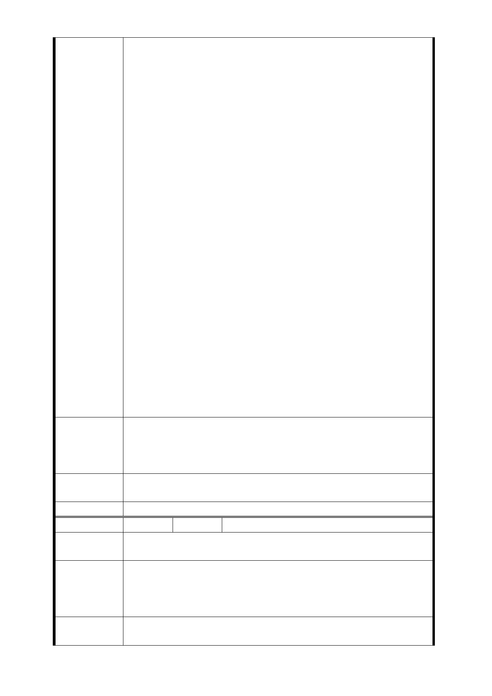

價，勢必需大幅提高每坪之單價？那捷運局及政府是否為最
大的炒房集團？在馬總統實現居住正義的政策理念下，捷運
局以提高房價為基礎的理論是否與政府政策背道而馳？
我們是單純的住戶非投機客，要求的是居住使用空間非炒作
房價。若是在現有條件下強制進行聯合開發，便是政府強迫
住戶為居住空間而搬離現有家園，這是所謂的居住正義嗎？
2. 捷運開發區域的選定過程粗糙且蠻橫不合理：
開發區域的選定事先並無徵詢住戶意見，而評定的標準及過
程並無公開讓居民了解及參與。我們住戶都是在收到通知時
才知道住家將面臨拆除，這晴天霹靂的訊息讓我們夜夜無法
成眠。憲法不是有保障人民免於恐懼的自由嗎？為何捷運的
興建竟讓我們對未來充滿不確定性而恐懼？
在低所得高房價的時代，我們辛勤工作就為了擁有理想家園
的夢想，在好不容易實現夢想的時刻裡，政府蠻橫的決定讓
理想成了泡影，頓時對未來充滿了無力感，試問政府是如此
在照顧百姓的嗎？
對於開發區域的選定，不知選定的標準為何？目前 LG03（捷
五）用地區域內主要皆為屋齡不滿 25 年之建物，反觀相鄰之
莒光路一小段 721－750 多為超過 35 年以上之建物且區域更
適合出入口之設置。聯合開發應是配合都市更新一同考量，
為何區域選定上不選擇最佳選擇？考量點是否合理？
公共工程的用地取得應以政府機關用地優先而不應與民爭地
，西藏路與萬大路口附近有萬華國中與雙園國小等空間可使
用，且出入口的建置可簡化設計只建立單純的出入通道，不
須搶奪廣大居民住宅用地以聯合開發為名而圖利建商等。
威謝各位耐心看完這些陳情意見，簡單將我們的訴求重點簡
單陳列如下，希望各位能多方考量做出最佳的決定，謝謝！
1.住戶需求為居住使用的空間，若聯合開發後應取回原室內
建議辦法
使用空間。
2.若無法符合上述要求，我們一致反對聯合開發的計劃，請
相關單位重新評估出入口的設置地點及設計方式。
市府回應
意見
同編號捷五－1 回應意見。
委員會決議 同編號交一－1 委員會決議。
編 號 捷五-30 陳情人 黃○蘭、郭○輔
陳情理由
家人多年居住於此地，現有房屋若聯合開發後無法取回原室
內空間供家人使用，就反對聯合開發的計畫。
公共工程的用地取得應以政府機關用地優先，而不應與民爭
建議辦法
地，西藏路與萬大路口附近有萬華國中與雙園國小等空間可
使用，且出入口的建置可簡化設計只建立單純的出入通道，
不須搶奪廣大居民住宅用地。
市府回應
意見
同編號捷五－1 回應意見。
- 71 -